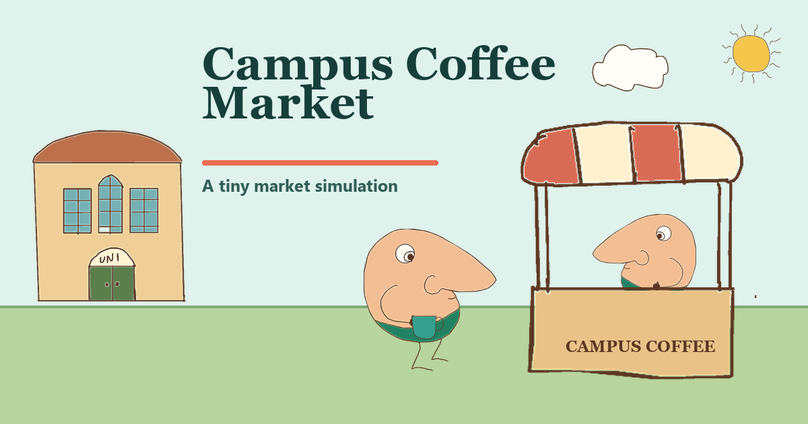

Agent-based market simulation
Campus Coffee Market
Predict how a shock will affect a university coffee market, then watch students and coffee shops respond as prices and quantities adjust.
- No previous economics knowledge required
- Designed for open days and classroom demonstrations
- Includes demand and supply shocks and price controls